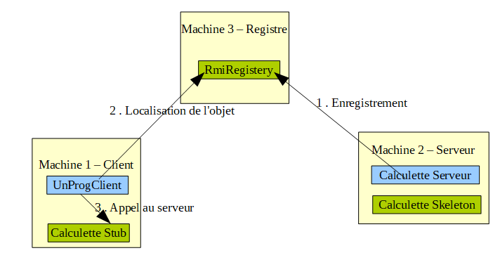

TDM08¶
1 Introduction¶
Ce TDM va permettre de découvrir JAVA RMI.
RMI (Remote Method Invocation) est une technologie développée et fournie par JAVA à partir du JDK 1.1 pour permettre de mettre en oeuvre facilement des objets distribués.
2 La présentation et l'architecture de RMI¶
Le but de RMI est de permettre l'appel, l'exécution et le renvoi du résultat d'une méthode exécutée dans une machine virtuelle différente de celle de l'objet l'appelant. Cette machine virtuelle peut être sur une machine différente pourvu qu'elle soit accessible par le réseau.
La machine sur laquelle s'exécute la méthode distante est appelée serveur.
L'appel coté client d'une telle méthode est un peu plus compliqué que l'appel d'une méthode d'un objet local mais il reste simple. Il consiste à obtenir une référence sur l'objet distant puis à simplement appeler la méthode à partir de cette référence.
La technologie RMI se charge de rendre transparente la localisation de l'objet distant, son appel et le renvoi du résultat.
En fait, elle utilise deux classes particulières, le stub et le skeleton, qui sont générées dynamiquement par JAVA.
Le stub est une classe qui se situe côté client et le skeleton est son homologue coté serveur. Ces deux classes se chargent d'assurer tous les mécanismes d'appel, de communication, d'exécution, de renvoi et de réception du résultat.

Il existe également un RMI Registery, qui mémorise la liste des serveurs offrant un service.
3 Les différentes étapes pour créer un objet distant et l'appeler avec RMI¶
Le développement coté serveur se compose de :
- La définition d'une interface qui contient les méthodes qui peuvent être appelées à distance
- L'écriture d'une classe qui implémente cette interface
- L'écriture d'une classe qui instanciera l'objet et l'enregistrera en lui affectant un nom dans le registre de noms RMI (RMI Registry)
Le coté serveur comprendra également le développement du RMI Registry.
Le développement côté client se compose de :
- L'obtention d'une référence sur l'objet distant à partir de son nom
- L'appel à la méthode à partir de cette référence
4 Le développement coté serveur¶
4.1 La définition d'une interface qui contient les méthodes de l'objet distant¶
L'interface à définir doit hériter de l'interface java.rmi.Remote. Cette interface ne contient aucune méthode mais indique simplement que l'interface peut être appelée à distance.
L'interface doit contenir toutes les méthodes qui seront susceptibles d'être appelées à distance.
La communication entre le client et le serveur lors de l'invocation de la méthode distante peut échouer pour diverses raisons telles qu'un crash du serveur, une rupture de la liaison, etc ...
Ainsi chaque méthode appelée à distance doit déclarer qu'elle est en mesure de lever l'exception java.rmi.RemoteException.
Exemple :
import java.rmi.Remote;
import java.rmi.RemoteException;
public interface Calculette extends Remote
{
public int somme(int a, int b) throws RemoteException;
}
4.2 L'écriture d'une classe qui implémente cette interface¶
Cette classe correspond à l'objet distant. Elle doit donc implémenter l'interface définie et contenir le code nécessaire.
import java.rmi.RemoteException;
public class CalculetteImpl implements Calculette
{
public int somme(int a, int b) throws RemoteException
{
System.out.println("Calcul de la somme de "+a+" et "+b);
int c = a+b;
return c;
}
}
4.3 L'écriture d'une classe Server¶
Cette classe Server va permettre d'instancier l'objet, de créer un serveur qui va attendre les demandes et de l'enregistrer dans le registre.
import java.rmi.AccessException;
import java.rmi.AlreadyBoundException;
import java.rmi.RemoteException;
import java.rmi.registry.LocateRegistry;
import java.rmi.registry.Registry;
import java.rmi.server.UnicastRemoteObject;
public class CalculetteServer
{
public static void main(String[] args) throws AccessException, RemoteException, AlreadyBoundException
{
// METTRE ICI L'ADRESSE IP DE VOTRE SERVEUR
System.setProperty("java.rmi.server.hostname", "192.168.130.XXX");
// Crée un objet réel capable de faire des calculs
CalculetteImpl calculetteImpl = new CalculetteImpl();
// Crée un serveur ecoutant sur le port 7070, permettant d'accéder à cet objet réel
Calculette skeleton = (Calculette) UnicastRemoteObject.exportObject(calculetteImpl,7070);
// Il y a un registry sur votre machine sur le port 5050
Registry registry = LocateRegistry.getRegistry("127.0.0.1",5050);
// On indique au registry qu'un service est présent sur notre machine, avec son nom
registry.bind("calculette", skeleton);
System.out.println("Le serveur est prêt ...");
}
}
4.4 L'écriture d'une classe Registry¶
Cette classe va permettre de créer un service RMI Registry, écoutant sur le port 5050, et mémorisant la liste des serveurs qui offrent des services.
package tp.tp5;
import java.rmi.AccessException;
import java.rmi.AlreadyBoundException;
import java.rmi.RemoteException;
import java.rmi.registry.LocateRegistry;
import java.rmi.registry.Registry;
public class CreateRegistry
{
public static void main(String[] args) throws AccessException, RemoteException, AlreadyBoundException, InterruptedException
{
// Il y a un registry sur le port 5050
Registry registry = LocateRegistry.createRegistry(5050);
System.out.println("Le registry est prêt ...");
// Indispensable pour que le registry continue
while(true)
{
Thread.sleep(100000);
}
}
}
A noter : pour des raisons obscures, la classe CreateRegistry doit avoir dans son classpath (ou son projet) la classe Caculette. (voir le dernier post de http://stackoverflow.com/questions/27671325/why-does-simple-rmi-server-need-codebase pour comprendre pourquoi en détail).
5 Le développement coté client¶
Pour pouvoir utiliser les services proposés par CalculetteServer, il faut obtenir une référence sur l'objet distant à partir de son nom, et il est ensuite possible d'invoquer une méthode sur celui ci.
Voici un exemple :
package tp.tp5;
import java.rmi.AccessException;
import java.rmi.AlreadyBoundException;
import java.rmi.NotBoundException;
import java.rmi.RemoteException;
import java.rmi.registry.LocateRegistry;
import java.rmi.registry.Registry;
/**
* Programme utilisant les services offerts par CalculetteServer
*
*/
public class UnProgrammeClient
{
public static void main(String[] args) throws AccessException, RemoteException, AlreadyBoundException, NotBoundException
{
// Il y a un registry sur le port 5050 sur votre machine
Registry registry = LocateRegistry.getRegistry("127.0.0.1",5050);
// On récupére un stub qui nous permettra d'accéder au service
Calculette stub = (Calculette) registry.lookup("calculette");
// On va maintenant pourvoir s'en servir pour faire un calcul
System.out.println("Début du programme client");
int a = 5;
int b = 8;
int c = stub.somme(a, b);
System.out.println("Le resultat est "+c);
}
}
A noter :
- L'objet retourné étant de type Remote, il faut réaliser un cast vers l'interface qui définit les méthodes de l'objet distant.
- Un fois le cast réalisé, il suffit simplement d'appeler la méthode.
6 Détails sur la mise en oeuvre des objets RMI¶
La mise en oeuvre et l'utilisation d'objets distants avec RMI nécessite plusieurs étapes :
- Démarrer le registre RMI sur le serveur en exécutant la classe qui effectue le lancement (dans notre exemple CreateRegistery)
- Exécuter la classe qui instancie l'objet distant et l'enregistre dans le serveur de noms RMI (dans notre exemple la classe CalculetteServer)
- Lancer l'application ou l'applet pour tester (dans notre exemple CalculetteClient)
7 Exercice 1 – RMI , l'exemple classique¶
Mettez en œuvre les explications précédentes : + faites un projet contenant les classes Calculette, CalculetteImpl, CreateRegistry, CalculetteServeur, CalculetteClient + lancer la classe CreateRegistry + lancer la classe CalculetteServeur + lancer la classe CalculetteClient
Vérifiez le fonctionnement de l'ensemble. Analysez les flux réseaux avec Wireshark.
8 Exercice 2 – RMI, la suite¶
Mettez vous par groupe de 2 binômes. Votre poste est client , le poste de l'autre binôme est serveur , faites fonctionner cette méthode somme à distance entre vos deux postes.
Analysez les flux réseaux avec Wireshark.
Ajoutez la méthode soustraction à l'interface Calculette. Votre poste est toujours client , le poste de l'autre binôme est toujours serveur , faites fonctionner cette méthode soustraction à distance.
Analysez les flux réseaux avec Wireshark.
Exercice 3 – RMI et le jeu de Nim¶
La version classique du jeu de Nim se joue avec plusieurs tas composés chacun de plusieurs jetons, ou pions, ou allumettes.
Chaque joueur à son tour peut enlever 1, 2 ou 3 pions, mais dans un seul tas à la fois. Le gagnant est celui qui retire le dernier pion.
Faites un jeu de Nim en réseau grâce à RMI. Pour chaque partie, vous aurez donc deux clients et un serveur (chaque client correspondant à un joueur).